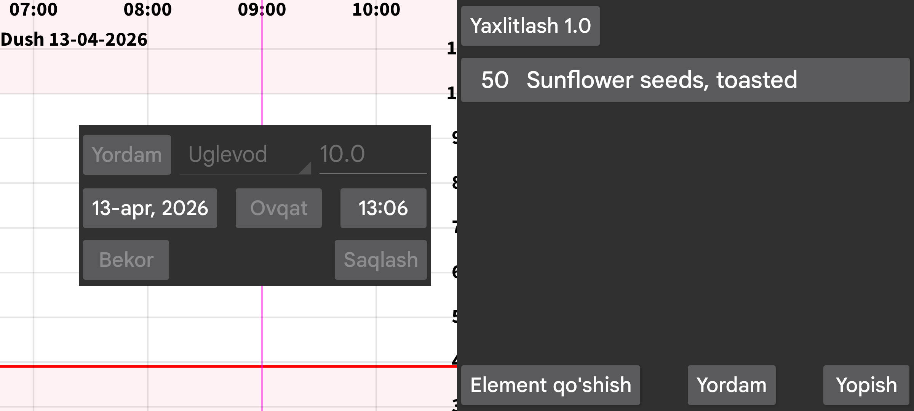
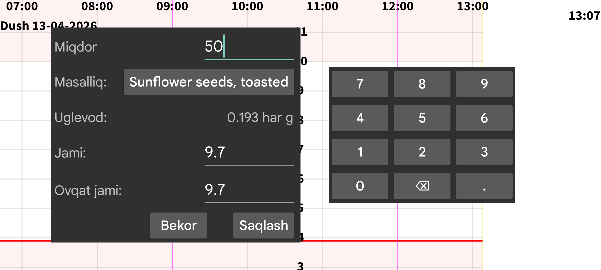
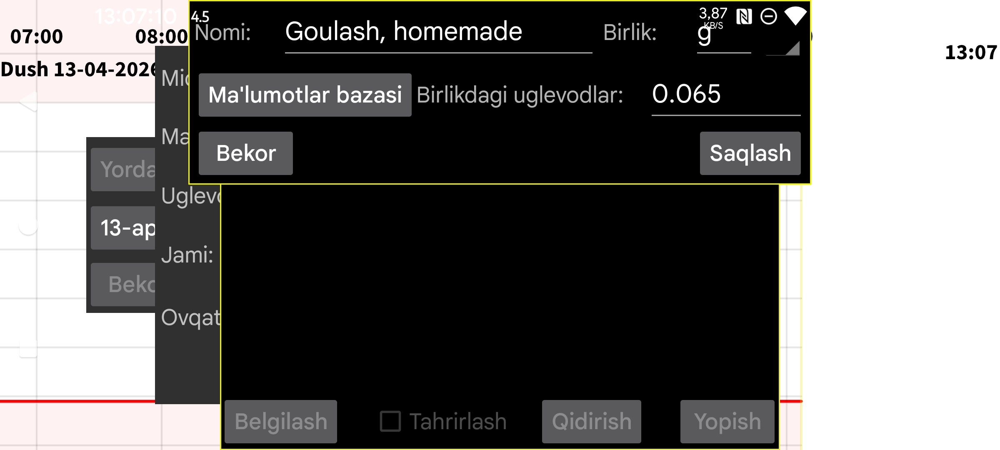

Ovqat tarkibidagi mahsulotlar miqdorini kiriting. Shundan so‘ng umumiy uglevod miqdori hisoblanadi. Shuningdek butun ovqat yoki alohida ingredient uchun uglevod miqdorini ko‘rsatish mumkin, bunda dastur kerakli ingredient miqdorini hisoblab beradi.
Element qo‘shish tugmasini bosib ovqatga yangi element qo‘shing. Ochilgan oynada ingredientni tanlab, uning miqdorini (yoki butun ovqat yoxud shu elementning umumiy uglevodini) ko‘rsatishingiz mumkin.
Tanlash tugmasi yoki avval ko‘rsatilgan ingredient nomini bosish sizni oldindan belgilangan ingredientlar ro‘yxatiga olib boradi. U yerda Belgilash tugmasi bilan yangi ingredient yaratish mumkin. Keyin uning nomini va ko‘rsatilgan birlikdagi uglevod miqdorini kiritasiz.
Shuningdek Ma’lumotlar bazasi ni bosib oziq-ovqat tarkibi bazasiga kirishingiz mumkin. U yerda mahsulotlarni qidirish, ularning tarkibini ko‘rish va Tanlash tugmasi bilan mahsulot nomi hamda uglevod miqdorini ingredient ta’rifiga qo‘shish mumkin.